図解：フォーヴィスム
フォーヴィスムの成立
- 19世紀末

 四巨匠の登場ポスト印象主義
四巨匠の登場ポスト印象主義
超えることが課題 - 〜1898
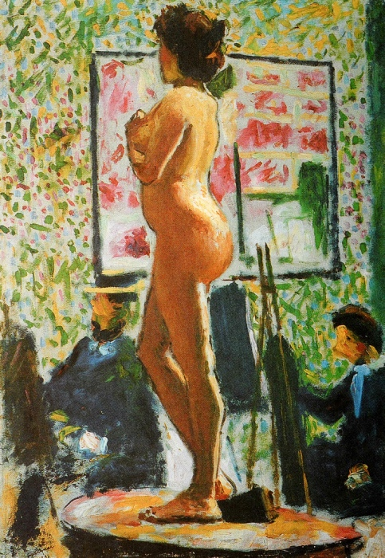
モローの教室自由な指導
マティスらが学ぶ - 1904

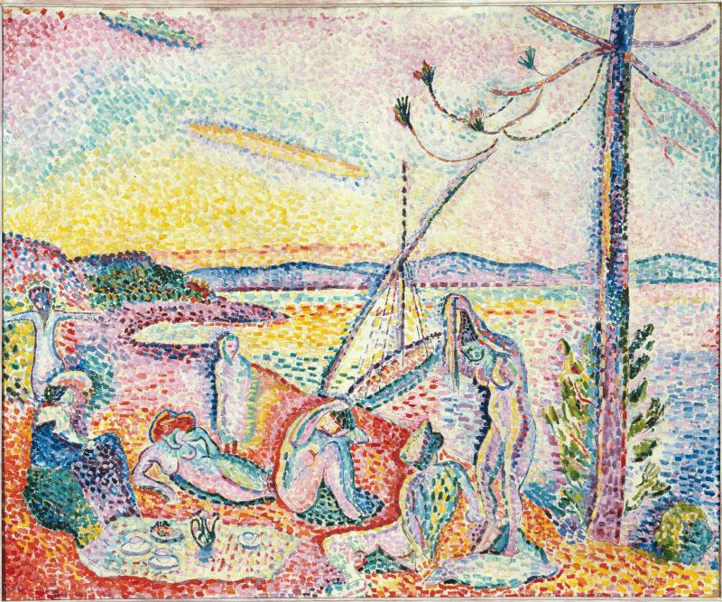
シニャックに学ぶ新印象主義を吸収
四巨匠の要素を一作に - 1905
 「野獣」と呼ばれるヴラマンクに衝撃
「野獣」と呼ばれるヴラマンクに衝撃
秋のサロンで嘲笑 - 1905〜06

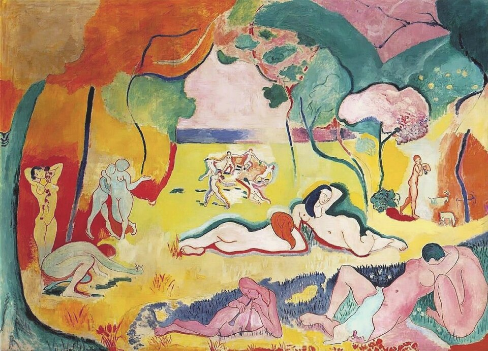
《生きる喜び》四巨匠を継ぐ統合
原色・補色・単純化
印象派と何が違うか
感情に従って原色を選ぶ塗り方色を細かく並べる混ぜずに原色を塗る印象繊細な光の変化目を圧する強さ
緑から急に黄色へ形自然を写す単純化・デフォルメ
画家の思いで変える
図版の出典
- 《自画像》ポール・セザンヌ、1875年頃：出典（Public domain）
- 《黄色いキリストのある自画像》ポール・ゴーギャン、1890～1891年、オルセー美術館：出典（Public domain）
- 《黄褐色の裸婦（Nu fauve／Pose à l’École des Beaux-Arts）》アルベール・マルケ：出典（Public domain（PD-Art／PD-old-70／PDM））
- 《ポール・シニャックの肖像》ジョルジュ・スーラ、1890年、コンテ・クレヨン、個人蔵：出典（Public domain）
- 《豪奢、静寂、逸楽（Luxe, calme et volupté）》アンリ・マティス：出典（Public domain（PD-Art／PD-old-70／PDM））
- 《帽子の女（Femme au chapeau）》アンリ・マティス：出典（Public domain（PD-Art／PD-old-70／PDM））
- 《縞のTシャツの自画像》アンリ・マティス、1906年、デンマーク国立美術館：出典（Public domain）
- 《生きる喜び（Le Bonheur de vivre）》アンリ・マティス：出典（Public domain（PD-Art／PD-old-70／PDM））
重要人物
フォーヴィスムの画家
- アンリ・マティス画家リーダー的存在。四巨匠の様式の統合を目指す
- モーリス・ド・ヴラマンク画家独学で伝統を拒む。ゴッホを愛し、暴力的な色彩
- アンドレ・ドラン画家マティスにヴラマンクを紹介。後に古典へ回帰
- アルベール・マルケ画家モローの教室から出た仲間の一人
- ジョルジュ・ルオー画家モローの教室から出た仲間の一人
マティスが学んだ人
 ギュスターヴ・モロー師象徴主義の画家。様式を押しつけず学生を伸ばす
ギュスターヴ・モロー師象徴主義の画家。様式を押しつけず学生を伸ばす- ポール・シニャック画家スーラの後継者。点描を離れたマティスに激怒
 オーギュスト・ロダン彫刻家マティスのデッサンに、もっと細かく描くよう助言
オーギュスト・ロダン彫刻家マティスのデッサンに、もっと細かく描くよう助言
ポスト印象主義の四巨匠
 ジョルジュ・スーラ画家点描の光学的効果を強調
ジョルジュ・スーラ画家点描の光学的効果を強調- ポール・セザンヌ画家対象の形態を強調。1904年の秋のサロンで回顧展
 フィンセント・ファン・ゴッホ画家視覚を超える表現を強調。ヴラマンクが傾倒
フィンセント・ファン・ゴッホ画家視覚を超える表現を強調。ヴラマンクが傾倒- ポール・ゴーギャン画家想像力と構成を強調。ナビ派が慕う
騒動を伝えた批評家
肖像・図版の出典
- 《縞のTシャツの自画像》アンリ・マティス、1906年、デンマーク国立美術館：出典（Public domain）
- 《自画像》ギュスターヴ・モロー、素描、ギュスターヴ・モロー美術館：出典（Public domain）
- 《ポール・シニャックの肖像》ジョルジュ・スーラ、1890年、コンテ・クレヨン、個人蔵：出典（Public domain）
- オーギュスト・ロダンの写真、ナダール撮影、1891年：出典（Public domain）
- ジョルジュ・スーラの写真、1888年、撮影者不明：出典（Public domain）
- 《自画像》ポール・セザンヌ、1875年頃：出典（Public domain）
- 《自画像》フィンセント・ファン・ゴッホ、1887年、シカゴ美術館：出典（Public domain）
- 《黄色いキリストのある自画像》ポール・ゴーギャン、1890～1891年、オルセー美術館：出典（Public domain）
フォーヴィスムの登場
「野獣」と呼ばれた絵画
動画 1:49～20世紀初頭に登場したフォーヴィスムは、短い活動期間ながら新しい時代を告げた芸術潮流です。フランス語のフォーヴは野獣を意味し、野獣派とも呼ばれます。その名称は、1905年のサロン・ドートンヌに由来します。
複数の展覧会が競うパリ
動画 2:08～オトンヌはフランス語で「秋」を意味し、サロン・ドートンヌは「秋のサロン」という意味です。1900年頃のパリの展覧会は、大きく伝統的なサロンと無審査のアンデパンダン展に分かれていました。前者はアカデミー主催のサロン・ド・パリを引き継いだため、保守性が強くありました。これに対し、スーラやルドンらが関わり1884年に始まったアンデパンダン展は、無審査で自由に出品できる革新的な展覧会でした。
1903年に始まったサロン・ドートンヌも、保守的なサロンへ対抗するものでした。他の展覧会が春に開かれる中、秋に開催する点も新しかったのです。伝統的なサロンだけが絶対的な権威を持つ時代ではなくなっていました。
野獣に囲まれたドナテッロ
動画 2:55～1905年のサロン・ドートンヌでは、一室が、荒々しい筆触と色彩の作品で埋め尽くされました。その中央に古典的な彫刻が置かれた光景を見た批評家ルイ・ヴォークセルは、「野獣に囲まれたドナテッロ」と評しました。初期ルネサンスの彫刻家ドナテッロになぞらえた古典的な像と、周囲の絵画との対比です。批評家はこの異様さを取り上げ、画家たちには嘲笑が向けられました。
画像を拡大 ＋
《帽子の女（Femme au chapeau）》
- 作者
- アンリ・マティス
- 制作時期
- 1905年
- 所在地・所蔵
- サンフランシスコ近代美術館（91.161）
- 素材・形式
- 絵画

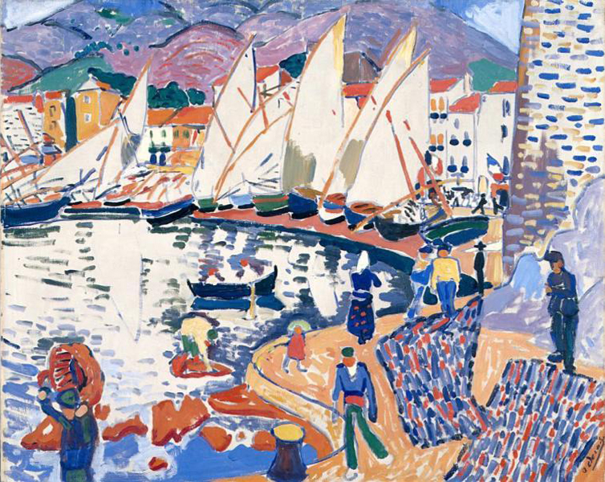
画像を拡大 ＋《乾燥する帆（Le séchage des voiles）》
- 作者
- アンドレ・ドラン
- 制作時期
- 1905年
- 所在地・所蔵
- プーシキン美術館、モスクワ
- 素材・形式
- 絵画
出典・画像について
担当1が動画画面実見し抽出《曲芸》を訂正。縁日の戯画的人物と赤服女。公式cqraRzで題名・副題・1905年確認。©Adagp/Philippe Migeat/GrandPalaisRmnで再利用条件未確認、保留。同公式は1905展示がフォーヴと別区画と明記。
《Jeu de massacre（的当て遊び／動画表記《虐殺》）》
- 作者
- ジョルジュ・ルオー
- 制作時期
- 1905年
- 所在地・所蔵
- ポンピドゥー・センター（AM1989-560）
- 素材・形式
- 絵画
出典・画像について
ルオー作品の展示区画について
動画の比較画面にはルオー《虐殺》も現れますが、ポンピドゥー・センターの作品解説は、ルオーはマティスらと別の区画に展示されたと記します。本教材では作品の比較と同室展示の断定を分け、ルオーもその一室にいたとは記述しません。
ところが画家たちは、その騒ぎに手応えを感じました。前年のサロン・ドートンヌではセザンヌ、その前年にはゴーギャンの回顧展が開かれていました。野獣という非難は、自分たちが両者とは異なるものを作った証でもあったのです。画家たちはその呼び名を恥じず、誇りに思うようになりました。
マティスと巨匠たち
マティスが目指した統合
動画 4:07～リーダー的な存在は、20世紀を代表するアンリ・マティスです。その目標は、ポスト印象主義の巨匠たちの様式を統合することでした。19世紀末に登場したスーラ、セザンヌ、ゴッホ、ゴーギャンは、20世紀を迎える芸術家たちに大きな影響を与えました。伝統的な絵画とも印象派とも違う表現を示しましたが、優先する要素は異なります。スーラは点描の光学的効果、セザンヌは対象の形態、ゴッホは視覚を超える表現、ゴーギャンは想像力と構成を強調しました。
巨匠を超えるという課題
動画 5:03～彼らは存命中には大衆から十分に評価されませんでしたが、若い画家には早くから研究されていました。スーラの技法を学ぶ人々や、ゴーギャンを慕うナビ派が生まれます。ナビ派はセザンヌも敬い、モーリス・ドニは1900年に《セザンヌ礼賛》を描きました。ゴッホにも、ロダンをはじめ、作品を好み収集する芸術家がいました。20世紀を生きる画家に与えられた課題は、彼らをどう超えるかだったのです。

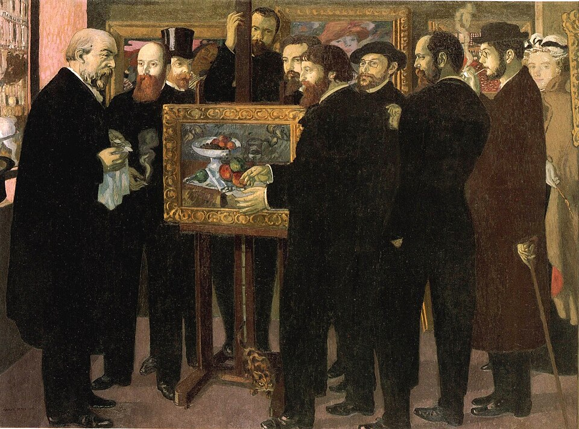
画像を拡大 ＋《セザンヌ礼賛（Hommage à Cézanne）》
- 作者
- モーリス・ドニ
- 制作時期
- 1900年
- 所在地・所蔵
- オルセー美術館（RF1977 137）
- 素材・形式
- 絵画
自由な師モローの教室
動画 5:43～マティスはフォーヴィスムを確立する以前、それぞれの巨匠から影響を受けて制作しました。その背景には、師ギュスターヴ・モローの指導があります。《サロメ》などを描いた象徴主義の画家モローは、アカデミーの教授でありながら特定の様式へ導かず、学生がやりたいことを伸ばしました。その自由さは、伝統に反する芸術を志す若者にも支持されました。
マティスのほか、ジョルジュ・ルオー、アルベール・マルケ、アンリ・マンギャン、シャルル・カモワンらも教室から出ました。1905年の騒動以前にも、フォーヴィスムに近い荒々しい色彩の作品は描かれています。自由な師のもとで、仲間が刺激し合って様式を作っていったのです。

《黄褐色の裸婦（Nu fauve／Pose à l’École des Beaux-Arts）》
- 作者
- アルベール・マルケ
- 制作時期
- 1898年
- 所在地・所蔵
- ボルドー美術館（Bx1960.4.2）
- 素材・形式
- 絵画
出典・画像について
初期抽出でマティスとした作者を動画画面・作品資料に従いマルケへ訂正。
画像出典：Albert Marquet（写真・画像提供）／アルベール・マルケ（作品）
Public domain（PD-Art／PD-old-70／PDM）
作品情報：作品・画像・利用条件
ロダンへの相談と拒絶
動画 6:37～モローが1898年に亡くなると、マティスはさらに新しい様式を求め、セザンヌ、ゴッホ、ゴーギャン以外の芸術家からも学ぼうとしました。その一人が彫刻家オーギュスト・ロダンです。彫刻の形態に関心を持ち、ロダンの助手だった友人を介して自分のデッサンを見せました。
返ってきたのは、細部にこだわり、もっと細かく描くようにという助言でした。軽蔑していたアカデミスムに近い言葉と感じたマティスは、それに耳を貸しませんでした。何を期待していたかは分かりませんが、ロダンが不完全な肉体を作品にしていた点に興味があったと思われます。

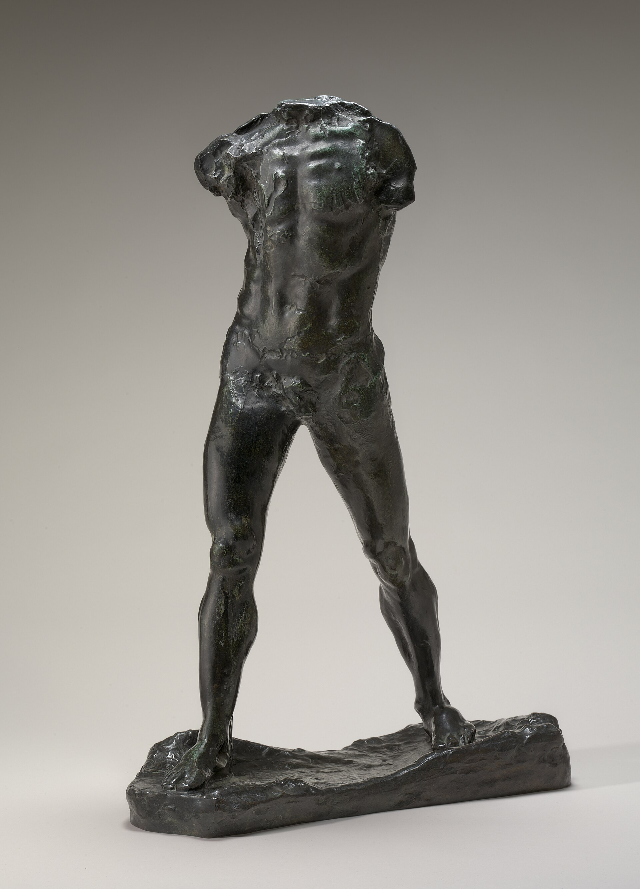
画像を拡大 ＋《歩く人（L’Homme qui marche）》
- 作者
- オーギュスト・ロダン
- 制作時期
- 1900年（動画表記、大型化・鋳造年は個体で異なる）
- 所在地・所蔵
- 動画の鋳造個体未確定
- 素材・形式
- 彫刻
出典・画像について
《歩く人》の鋳造作例のうち、ワシントン・ナショナル・ギャラリー所蔵品（1903年頃鋳造）の写真。
画像出典：Auguste Rodin / National Gallery of Art / Wikimedia Commons
CC0
作品情報：画像出典・利用条件
制作メモ
動画450秒の展示個体とは別の鋳造。
マティス自身の後の彫刻にも、不完全な身体や、見たままにとらわれない独特の形が現れます。既存の常識にとらわれるなという助言を期待したのかもしれません。いずれにせよ、このやり取りは、その後の制作に影響したと考えられます。

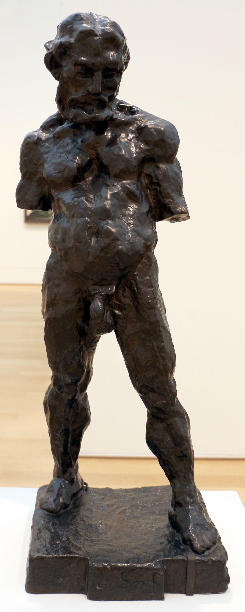
画像を拡大 ＋《奴隷（Le Serf）》
- 作者
- アンリ・マティス
- 制作時期
- 1900～1903年（原型、鋳造年未確定）
- 所在地・所蔵
- 動画の鋳造個体未確定
- 素材・形式
- 彫刻
出典・画像について
マティス《奴隷（農奴）》の鋳造作例のうち、シカゴ美術館所蔵品の写真。
画像出典：Francesco Bini / Wikimedia Commons
CC BY-SA 4.0
作品情報：画像出典・利用条件
制作メモ
動画459秒の個体とは別の鋳造の可能性がある。
MoMA公式81698で1909ブロンズ624.1939確認したが動画鋳造との一致と写真条件未確定。別鋳造・制作中写真で代用せず保留。
《ラ・セルパンティーヌ（蛇女）》
- 作者
- アンリ・マティス
- 制作時期
- 1909年（原型）
- 所在地・所蔵
- 動画の鋳造個体未確定
- 素材・形式
- 彫刻
出典・画像について
シニャックと過ごした夏
動画 8:00～もう一人、フォーヴィスム以前のマティスに影響したのが、スーラの後継者ポール・シニャックです。1904年、南フランスのサン＝トロペで共に夏を過ごし、新印象主義に学びました。その成果が《豪奢、静寂、逸楽》です。
《豪奢、静寂、逸楽》の四つの要素
動画 8:23～この作品に用いられた点描はスーラを思わせますが、裸婦の単純で抽象的な形にはセザンヌが、現実にはない色使いにはゴッホが重なります。題名はボードレールの『悪の華』の一節に由来し、空想的な要素にはゴーギャンとのつながりが見られます。一つの作品で四人の巨匠の要素をまとめたのです。

《豪奢、静寂、逸楽（Luxe, calme et volupté）》
- 作者
- アンリ・マティス
- 制作時期
- 1904年
- 所在地・所蔵
- オルセー美術館（国立近代美術館から寄託）
- 素材・形式
- 絵画
シニャックも絶賛し、翌年のアンデパンダン展に出品されると購入しました。しかしマティスはこの作品を最後に点描を離れます。出品からわずか半年後、仲間たちと全く異なる作品をサロン・ドートンヌに展示し、フォーヴィスムが始まりました。
ヴラマンクとの出会い
動画 9:29～点描から突然、荒々しい《帽子の女》へ移った理由を考える上で重要なのが、1905年二月、アンドレ・ドランの紹介で出会ったモーリス・ド・ヴラマンクです。後に運動の中心となるヴラマンクは、あらゆる伝統を拒み、独学で描いていました。唯一ゴッホには影響され、「父よりもゴッホを愛す」とまで語ったといいます。
特徴は、暴力的ともいえる色彩の荒々しさです。暖色を好み、ゴッホの色彩表現をさらに強烈にしたような絵を描きました。体格も態度も絵画も型破りな彼に、マティスは大きな衝撃を受けます。点描を捨て、感情に従って描く方向へ進みました。ただし《帽子の女》も、マティスにとっては進化の途中にある作品でした。
Commons初回と絞込で同じ構図・所蔵・再利用可能画像未確定。Le VergerやLes Jardins à Chatouなど似た題名に推測対応せず保留。
《庭園（詳細未確定）》
- 作者
- モーリス・ド・ヴラマンク
- 制作時期
- 1904年（動画表示、外部照合未了）
- 所在地・所蔵
- 未確定
- 素材・形式
- 絵画
出典・画像について
Kunsthaus公式759982-en.pdfのLes Ramasseurs de pomme de terre MB0010、46×55.3cmだが同図柄個体未確定。©ProLitterisのため再利用条件未確認、保留。
《ジャガイモを拾う人々（候補、詳細未確定）》
- 作者
- モーリス・ド・ヴラマンク
- 制作時期
- 1905年（動画表示、公式候補1905～1907年頃）
- 所在地・所蔵
- 候補：メルツバッハー・コレクション、チューリヒ美術館長期寄託
- 素材・形式
- 絵画
出典・画像について
フォーヴィスムの表現
宣言から始まった運動ではない
動画 10:37～サロン・ドートンヌへの出品は結果的に運動となりましたが、共通の宣言があったわけではありません。アカデミーの伝統への嫌悪と、色を感情表現に使うという認識が、似た様式を生みました。仲間同士で刺激し合う中でも画風は一様ではなく、印象派に近い作品も写実的な作品もあります。

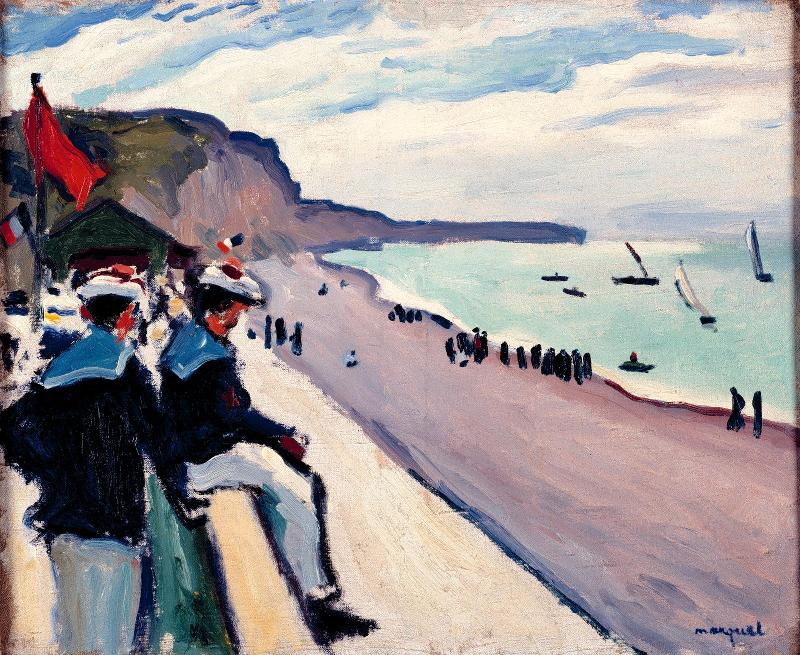
画像を拡大 ＋《フェカンの海岸（La Plage de Fécamp）》
- 作者
- アルベール・マルケ
- 制作時期
- 1906年
- 所在地・所蔵
- 国立近代美術館／ポンピドゥー・センター
- 素材・形式
- 絵画
出典・画像について
660秒下中央は作者名のみ。桃家・曲がる木・緑地が同図柄の作品を確定できない。1965年没の権利も未確認、似た作品で代用せず保留。
《風景（作品名未確定）》
- 作者
- シャルル・カモワン
- 制作時期
- 未確定
- 所在地・所蔵
- 未確定
- 素材・形式
- 絵画
出典・画像について
担当3が候補1921年Sous-bois à la Moutteを実見したが白服人物と動画の太幹・水面配置が異なり別作品。不採用として探索終了、保留。
《風景（作品名未確定）》
- 作者
- アンリ・マンギャン
- 制作時期
- 未確定
- 所在地・所蔵
- 未確定
- 素材・形式
- 絵画
出典・画像について
原色の強さと明るさ
動画 11:04～最も分かりやすい例がヴラマンクです。感情に従って原色を選び、印象主義のような繊細な色の変化を気にしません。緑から急に黄色へ移るような、強烈な使い方をします。これには副次的な効果もありました。
公式cxxe5oで題・年・65×81cm・AM2673P確認。画像©Adagp、Philippe Migeat/GrandPalaisRmn。Commons旧ファイル警告もあり利用可能画像未確保。1958没原作を米国PDだけで全面PDとせず保留。
《赤い木々（Les Arbres rouges）》
- 作者
- モーリス・ド・ヴラマンク
- 制作時期
- 1906年
- 所在地・所蔵
- 国立近代美術館／ポンピドゥー・センター
- 素材・形式
- 絵画
出典・画像について
筆触分割との違い
動画 11:29～印象派は戸外の光を捉え、明るい絵を求めました。絵具を混ぜるほど暗くなるため、異なる色を細かく並べ、遠くで見たときに一色に混ざる視覚効果を利用したのが筆触分割です。一方、フォーヴィスムはそのように細かく色を並べるのではなく、ほとんど混ぜず、原色を強く塗りました。色を暗くせず、繊細な光の変化とは違う、目を圧するような強い印象を生んだのです。
形も感情に従って変える
動画 12:27～感情に従って筆を動かせば、対象の形も単純化され、デフォルメされます。その変化は画家の思いによるものです。自然を写すのではなく、色の選択と同じく、対象の描き方も自由になるのです。
マティスの計算された色彩
動画 12:40～その一方で、マティスはよく考えて色を使いました。色相環で向かい合う補色を選び、対立させることで印象を強めます。特に赤と緑の関係を好み、鑑賞者へ強い色彩の効果を与えました。理論を踏まえながら感覚的に描いたのです。「色彩の魔術師」にとって、フォーヴィスムは実験の場だったのかもしれません。
《生きる喜び》に結実した統合
動画 13:22～ポスト印象主義の四巨匠を継ぎ、フォーヴィスムを経験して生まれたのが《生きる喜び》です。感情表現としての原色、スーラの色彩理論に通じる補色、セザンヌを思わせる形の抽象化、ゴッホのように視覚だけに従わない色、ゴーギャンのような画面構成が組み合わされました。統合はフォーヴィスムを通じて実現したのです。

《生きる喜び（Le Bonheur de vivre）》
- 作者
- アンリ・マティス
- 制作時期
- 1905～1906年
- 所在地・所蔵
- バーンズ財団、フィラデルフィア（BF719）
- 素材・形式
- 絵画
《帽子の女》での急な変化も、《生きる喜び》へ向かう通過点と考えられます。マティスは一年足らずで方法を確立しましたが、《豪奢、静寂、逸楽》を称賛したシニャックは激怒しました。点描を至高とする彼には、この変化は受け入れ難かったのでしょう。
運動のその後
短い運動と、その後の画家たち
動画 14:13～1905年に鮮烈に登場した運動は、1908年頃には分散していきました。仲違いがあったからではありません。印象派のように集まって独自の展覧会を開いていたわけではなく、ある時期に傾向が似通っていたという面が強かったのです。20世紀は芸術潮流の交代が激しく、一人の画家が複数の傾向を渡り歩く時代になります。
マティスは装飾性の高い絵を描く一方、色も形も単純化した絵も描き、ドランは古典に回帰しました。ヴラマンクは基本的な様式を変えませんでしたが、晩年には黒を基調とした暗い作品を描いています。同じ画家でも、時期によって大きく表現を変えたのです。

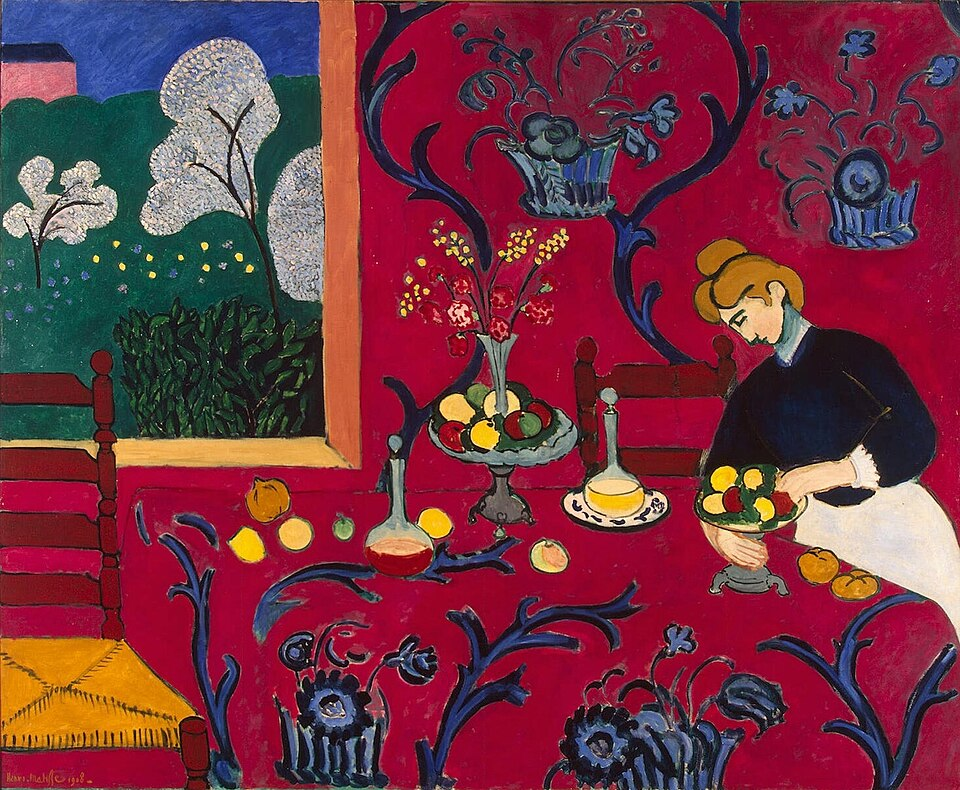
画像を拡大 ＋《赤のハーモニー（赤い部屋）》
- 作者
- アンリ・マティス
- 制作時期
- 1908年
- 所在地・所蔵
- エルミタージュ美術館
- 素材・形式
- 絵画
出典・画像について

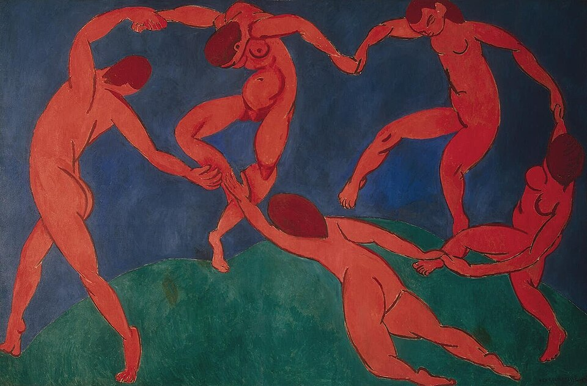
画像を拡大 ＋《ダンスII》
- 作者
- アンリ・マティス
- 制作時期
- 1910年
- 所在地・所蔵
- エルミタージュ美術館（ГЭ-9673）
- 素材・形式
- 絵画
出典・画像について
エルミタージュ所蔵の赤い人物の第二作。MoMAの淡い人物の第一作とは別。
画像出典：Gandalf's Gallery（写真・画像提供）／アンリ・マティス（作品）
CC BY-SA 2.0
作品情報：作品・画像・利用条件

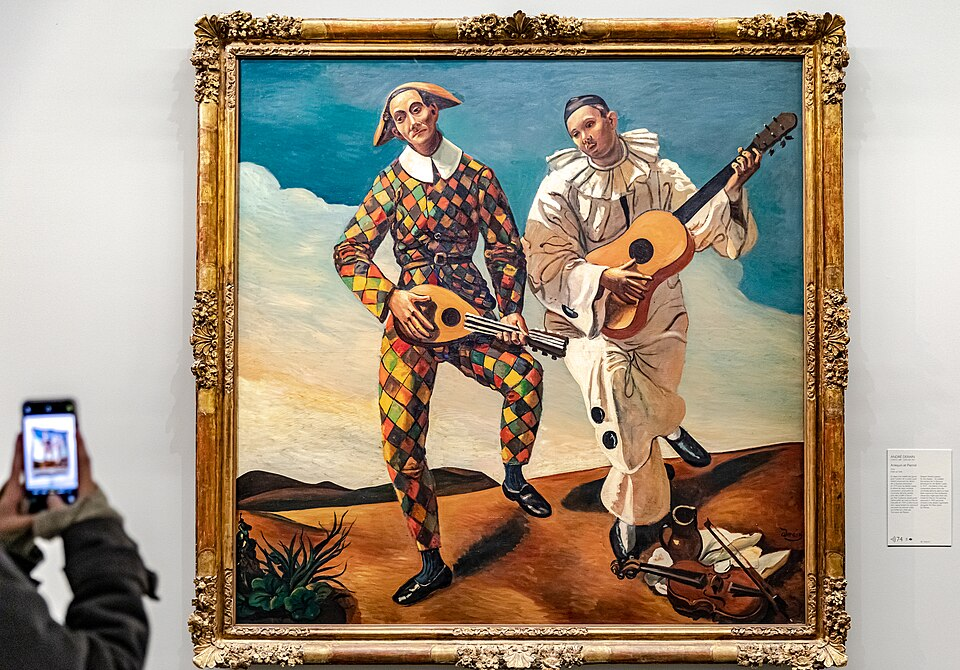
画像を拡大 ＋《アルルカンとピエロ（Arlequin et Pierrot）》
- 作者
- アンドレ・ドラン
- 制作時期
- 1924年
- 所在地・所蔵
- オランジュリー美術館（RF1960-41）
- 素材・形式
- 絵画
出典・画像について
Commons初回と絞込で黒青空・左樹列・曲る雪道の同一個体未確定。1958没の原作と写真条件も未確認、別雪景・米国限定PDで代用せず保留。
《吹雪（個体未確定）》
- 作者
- モーリス・ド・ヴラマンク
- 制作時期
- 未確定
- 所在地・所蔵
- 未確定
- 素材・形式
- 絵画
出典・画像について
色彩の革命から形態の革命へ
動画 15:11～短い運動であっても、色を自然の再現ではなく感情表現に使ったことは、絵画の革命でした。ほぼ同じ頃、形態にも革命が起こります。マティスと並ぶ20世紀の巨匠パブロ・ピカソを中心とする、キュビスムです。
要点まとめ
- フォーヴィスムは20世紀初頭の短い芸術潮流。フォーヴはフランス語で野獣を意味し、野獣派とも呼ばれる。名称は1905年のサロン・ドートンヌで、批評家ルイ・ヴォークセルが「野獣に囲まれたドナテッロ」と評したことに由来する。
- 1900年頃のパリには、保守的なサロン、1884年に始まった無審査のアンデパンダン展、1903年に始まった秋のサロン・ドートンヌなど、複数の展覧会があった。
- リーダー的存在のアンリ・マティスは、スーラ、セザンヌ、ゴッホ、ゴーギャンというポスト印象主義の巨匠の様式を統合しようとした。
- マティスはギュスターヴ・モローの自由な教室で学び、ルオー、マルケ、マンギャン、カモワンらも同門だった。ロダンにデッサンを見せたが、細かく描くよう助言されて耳を貸さなかった。
- 1904年にサン＝トロペでシニャックと過ごし、点描の《豪奢、静寂、逸楽》を描いた。一作に四人の巨匠の要素をまとめた作品で、題名はボードレールの『悪の華』に由来する。
- 1905年、ドランの紹介で出会ったヴラマンクの荒々しい色彩に衝撃を受け、マティスは点描を捨てて《帽子の女》へ進んだ。
- フォーヴィスムは共通の宣言から始まった運動ではない。原色をほとんど混ぜずに強く塗り、感情に従って色も形も変えた（デフォルメ）。マティスは補色、とくに赤と緑を計算して用いた。
- マティスの統合は《生きる喜び》に結実した。運動は1908年頃には分散し、ほぼ同じ頃、ピカソを中心とする形態の革命キュビスムが起こった。
確認問題
答えを考えてから開いてください。選択問題は選ぶとすぐ正誤と解説が出ます（選択肢の順番は開くたびに変わります）。各問題のリンクから該当の章や作品カードへ戻れます。
選択問題：0／5問回答・正解0
A. 一問一答答えを考えてから開く
問11905年のサロン・ドートンヌで、荒々しい絵画に囲まれた古典的な彫刻を見た批評家ルイ・ヴォークセルは、その光景を何と評したか。
答えを見る
問2色相環で向かい合う色で、マティスが対立させて印象を強め、特に赤と緑の関係を好んだものを何と呼ぶか。
答えを見る
問3保守的なサロンへ対抗して1903年に始まり、他の展覧会が春に開かれる中で秋に開催された展覧会は何か。
答えを見る
「秋のサロン」という意味。1884年に始まった無審査のアンデパンダン展とともに、伝統的なサロンだけが絶対的な権威を持つ時代ではなくなっていた。
→ 本文で確認（複数の展覧会が競うパリ）
B. 4択選ぶとすぐ正誤と解説
問4アカデミーの教授でありながら特定の様式へ導かず、マティスやルオーらの才能を伸ばした象徴主義の画家は誰か。
→ 本文で確認（自由な師モローの教室）
問51905年にドランの紹介で出会い、その荒々しい色彩でマティスに衝撃を与え、点描を捨てさせた画家は誰か。
→ 本文で確認（ヴラマンクとの出会い）
問6フォーヴィスムとほぼ同じ頃、ピカソを中心に起こった「形態の革命」はどれか。
→ 本文で確認（色彩の革命から形態の革命へ）
C. 図版問題画像を見て答える
問7この作品の名前と作者を答えよ。題名は誰のどの作品に由来するか。
答えを見る
問81905年のサロン・ドートンヌに出品された、この作品の名前はどれか。
→ 作品カードで確認
問9ポスト印象主義の四巨匠を継ぐ統合が結実したとされる、この作品の作者は誰か。
→ 作品カードで確認